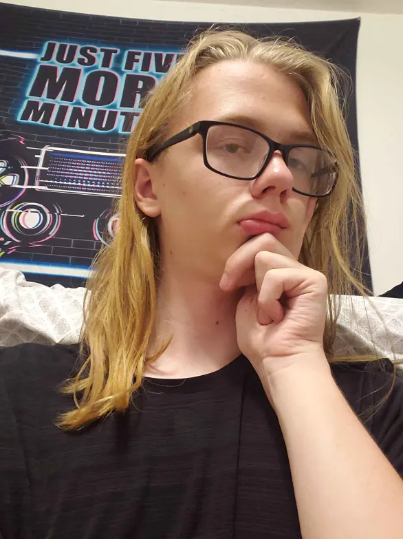

Hi! My name is Joseph Raines, or Joey Koutny R., or just Joey. I'm a college student with a passion in all forms of creative expression, including art, video games, music, and of course, writing, and I love rambling to people about my creations. TBA TBA aghhh TBA
Despite thinking of the idea for CO-WRITERS off the dome, many of the themes within the story are inspired by The Amazing Digital Circus by Gooseworx, just spun up quite a bit. And, uhhh, yeah, I think that's about it, TADC was my main source of inspiration for the themes. I still thought of most of it myself, but I can't name any other specific media that helped me with coming up with those ideas. I guess the first Maze Runner book also inspired me, I just don't know what in my stories it inspired.